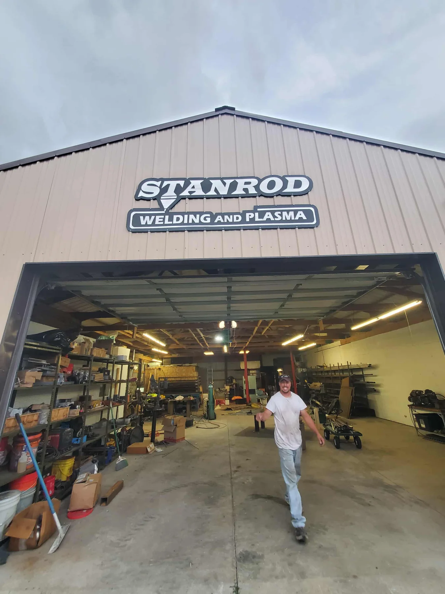
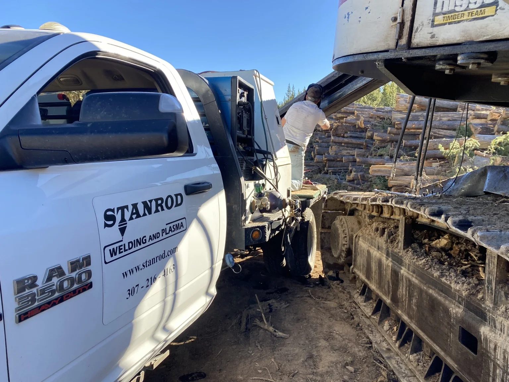

When a field condition, detail, repair, or last-minute fabrication item is standing between the project and a final inspection, Stanrod can help figure out a workable solution.
Welding and fabrication in Cheyenne, Wyoming
Experienced help when the job gets complicated
Stanrod helps contractors get difficult work across the finish line, helps homeowners turn ideas into real projects, and steps in when a repair needs more than a quick patch.
You do not need to know exactly what the solution is before you call. Bring the problem, the sketch, the failed part, or the inspection issue and we can work through it with you.

A working shop, not a stock-photo version of one.
How Stanrod can help
Practical solutions for real-world projects
The work is different from job to job, but the goal is usually the same: solve the problem cleanly, safely, and in a way that holds up when it matters.
Custom railings, brackets, steel details, decorative work, repairs, and one-off projects that do not fit neatly into something you can buy off a shelf.
Some repairs are simple. Others need judgment, fit-up, reinforcement, or a new approach. Those are the situations where experience matters most.
Real work
In the shop or out in the field
Some jobs come through the shop door. Others have to be solved where the equipment sits. Stanrod can handle both.

Custom shop fabrication.

Field repair when bringing the job to the shop is not an option.
FabChallenge
Learn the skill, practice the work, then prove you can do it
FabChallenge is built to challenge fabricators, but it is also built to teach. Video lessons, practice kits, graded kits, and clear standards help people improve before they put their work to the test.